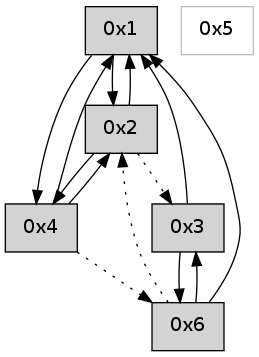

>> << IDX [start] -100 -25 -5 +0 +5 +25 +100 [615.284834146]
 Previous packets
----------------------------------------------------------------------
610.363753 beacon01(adaf) #0 coord=01,02,05,03,04,06 cycle=432.0ms assoc
-- color-indic=0 64 e4 aa
610.373714 beacon02(adaf) #0 coord=01,02,05,03,04,06 cycle=432.0ms assoc 64 b5 55
610.383715 beacon05(adaf) #0 coord=01,02,05,03,04,06 cycle=432.0ms assoc 64 13 7f
610.393715 beacon03(adaf) #0 coord=01,02,05,03,04,06 cycle=432.0ms assoc 64 8f 5b
610.403715 beacon04(adaf) #0 coord=01,02,05,03,04,06 cycle=432.0ms assoc 64 29 71
610.413717 beacon06(adaf) #0 coord=01,02,05,03,04,06 cycle=432.0ms assoc 64 5d 6d
610.425417 [Hello(4): seq=411 sym=1,2 asym=6 sysInfo= stat=1:9,0,0,0/2:6,0,0,0/6:5,0,0,0]
610.429765 [Hello(1): seq=310 sym=2,3,4 sysInfo= stat=2:3,0,0,0/3:0,0,0,0/4:8,0,0,0]
----------------------------------------------------------------------
610.855860 beacon01(adaf) #0 coord=01,02,05,03,04,06 cycle=432.0ms assoc
-- color-indic=0 64 20 c5
610.865822 beacon02(adaf) #0 coord=01,02,05,03,04,06 cycle=432.0ms assoc 64 71 3a
610.875821 beacon05(adaf) #0 coord=01,02,05,03,04,06 cycle=432.0ms assoc 64 d7 10
610.885822 beacon03(adaf) #0 coord=01,02,05,03,04,06 cycle=432.0ms assoc 64 4b 34
610.895821 beacon04(adaf) #0 coord=01,02,05,03,04,06 cycle=432.0ms assoc 64 ed 1e
610.905821 beacon06(adaf) #0 coord=01,02,05,03,04,06 cycle=432.0ms assoc 64 99 02
610.917513 [Hello(2): seq=906 sym=4,1 asym=3 sysInfo= stat=4:0,0,0,0/1:10,0,0,0/3:6,0,0,0]
----------------------------------------------------------------------
611.347969 beacon01(adaf) #0 coord=01,02,05,03,04,06 cycle=432.0ms assoc
-- color-indic=0 64 6c 75
611.357933 beacon02(adaf) #0 coord=01,02,05,03,04,06 cycle=432.0ms assoc 64 3d 8a
611.367932 beacon05(adaf) #0 coord=01,02,05,03,04,06 cycle=432.0ms assoc 64 9b a0
611.377931 beacon03(adaf) #0 coord=01,02,05,03,04,06 cycle=432.0ms assoc 64 07 84
611.387931 beacon04(adaf) #0 coord=01,02,05,03,04,06 cycle=432.0ms assoc 64 a1 ae
611.397931 beacon06(adaf) #0 coord=01,02,05,03,04,06 cycle=432.0ms assoc 64 d5 b2
611.409640 [Hello(4): seq=412 sym=1,2 asym=6 sysInfo= stat=1:10,0,0,0/2:7,0,0,0/6:5,0,0,0]
611.413958 [Hello(1): seq=311 sym=2,3,4 sysInfo= stat=2:4,0,0,0/3:0,0,0,0/4:8,0,0,0]
----------------------------------------------------------------------
611.840077 beacon01(adaf) #0 coord=01,02,05,03,04,06 cycle=432.0ms assoc
-- color-indic=0 64 a8 1a
611.850038 beacon02(adaf) #0 coord=01,02,05,03,04,06 cycle=432.0ms assoc 64 f9 e5
611.860038 beacon05(adaf) #0 coord=01,02,05,03,04,06 cycle=432.0ms assoc 64 5f cf
611.870038 beacon03(adaf) #0 coord=01,02,05,03,04,06 cycle=432.0ms assoc 64 c3 eb
611.880038 beacon04(adaf) #0 coord=01,02,05,03,04,06 cycle=432.0ms assoc 64 65 c1
611.890039 beacon06(adaf) #0 coord=01,02,05,03,04,06 cycle=432.0ms assoc 64 11 dd
611.901722 [Hello(2): seq=907 sym=4,1 asym=3 sysInfo= stat=4:0,0,0,0/1:11,0,0,0/3:7,0,0,0]
----------------------------------------------------------------------
612.332186 beacon01(adaf) #0 coord=01,02,05,03,04,06 cycle=432.0ms assoc
-- color-indic=0 64 f6 7b
612.342149 beacon02(adaf) #0 coord=01,02,05,03,04,06 cycle=432.0ms assoc 64 a7 84
612.352147 beacon05(adaf) #0 coord=01,02,05,03,04,06 cycle=432.0ms assoc 64 01 ae
612.362147 beacon03(adaf) #0 coord=01,02,05,03,04,06 cycle=432.0ms assoc 64 9d 8a
612.372147 beacon04(adaf) #0 coord=01,02,05,03,04,06 cycle=432.0ms assoc 64 3b a0
612.382148 beacon06(adaf) #0 coord=01,02,05,03,04,06 cycle=432.0ms assoc 64 4f bc
612.393833 [Hello(4): seq=413 sym=1,2 asym=6 sysInfo= stat=1:11,0,0,0/2:8,0,0,0/6:5,0,0,0]
612.399161 [Hello(1): seq=312 sym=2,4 sysInfo= stat=2:5,0,0,0/4:8,0,0,0]
----------------------------------------------------------------------
612.824293 beacon01(adaf) #0 coord=01,02,05,03,04,06 cycle=432.0ms assoc
-- color-indic=0 64 32 14
612.834254 beacon02(adaf) #0 coord=01,02,05,03,04,06 cycle=432.0ms assoc 64 63 eb
612.844254 beacon05(adaf) #0 coord=01,02,05,03,04,06 cycle=432.0ms assoc 64 c5 c1
612.854256 beacon03(adaf) #0 coord=01,02,05,03,04,06 cycle=432.0ms assoc 64 59 e5
612.864255 beacon04(adaf) #0 coord=01,02,05,03,04,06 cycle=432.0ms assoc 64 ff cf
612.874255 beacon06(adaf) #0 coord=01,02,05,03,04,06 cycle=432.0ms assoc 64 8b d3
612.885965 [Hello(2): seq=908 sym=4,1 asym=3 sysInfo= stat=4:0,0,0,0/1:12,0,0,0/3:8,0,0,0]
----------------------------------------------------------------------
613.316402 beacon01(adaf) #0 coord=01,02,05,03,04,06 cycle=432.0ms assoc
-- color-indic=0 64 7e a4
613.326365 beacon02(adaf) #0 coord=01,02,05,03,04,06 cycle=432.0ms assoc 64 2f 5b
613.336362 beacon05(adaf) #0 coord=01,02,05,03,04,06 cycle=432.0ms assoc 64 89 71
613.346363 beacon03(adaf) #0 coord=01,02,05,03,04,06 cycle=432.0ms assoc 64 15 55
613.356364 beacon04(adaf) #0 coord=01,02,05,03,04,06 cycle=432.0ms assoc 64 b3 7f
613.366366 beacon06(adaf) #0 coord=01,02,05,03,04,06 cycle=432.0ms assoc 64 c7 63
613.378060 [Hello(4): seq=414 sym=1,2 asym=6 sysInfo= stat=1:12,0,0,0/2:9,0,0,0/6:5,0,0,0]
613.382075 [Hello(1): seq=313 sym=2,4 sysInfo= stat=2:5,0,0,0/4:8,0,0,0]
----------------------------------------------------------------------
613.808509 beacon01(adaf) #0 coord=01,02,05,03,04,06 cycle=432.0ms assoc
-- color-indic=0 64 ba cb
613.818470 beacon02(adaf) #0 coord=01,02,05,03,04,06 cycle=432.0ms assoc 64 eb 34
613.828470 beacon05(adaf) #0 coord=01,02,05,03,04,06 cycle=432.0ms assoc 64 4d 1e
613.838470 beacon03(adaf) #0 coord=01,02,05,03,04,06 cycle=432.0ms assoc 64 d1 3a
613.848473 beacon04(adaf) #0 coord=01,02,05,03,04,06 cycle=432.0ms assoc 64 77 10
613.858471 beacon06(adaf) #0 coord=01,02,05,03,04,06 cycle=432.0ms assoc 64 03 0c
613.870161 [Hello(2): seq=909 sym=4,1 asym=3 sysInfo= stat=4:0,0,0,0/1:13,0,0,0/3:9,0,0,0]
----------------------------------------------------------------------
614.300618 beacon01(adaf) #0 coord=01,02,05,03,04,06 cycle=432.0ms assoc
-- color-indic=0 64 f7 cc
614.310579 beacon02(adaf) #0 coord=01,02,05,03,04,06 cycle=432.0ms assoc 64 a6 33
614.320580 beacon05(adaf) #0 coord=01,02,05,03,04,06 cycle=432.0ms assoc 64 00 19
614.330581 beacon03(adaf) #0 coord=01,02,05,03,04,06 cycle=432.0ms assoc 64 9c 3d
614.340580 beacon04(adaf) #0 coord=01,02,05,03,04,06 cycle=432.0ms assoc 64 3a 17
614.350580 beacon06(adaf) #0 coord=01,02,05,03,04,06 cycle=432.0ms assoc 64 4e 0b
614.362282 [Hello(4): seq=415 sym=1,2 asym=6 sysInfo= stat=1:13,0,0,0/2:10,0,0,0/6:5,0,0,0]
614.366590 [Hello(1): seq=314 sym=2,4 sysInfo= stat=2:6,0,0,0/4:8,0,0,0]
----------------------------------------------------------------------
614.792725 beacon01(adaf) #0 coord=01,02,05,03,04,06 cycle=432.0ms assoc
-- color-indic=0 64 33 a3
614.802686 beacon02(adaf) #0 coord=01,02,05,03,04,06 cycle=432.0ms assoc 64 62 5c
614.812686 beacon05(adaf) #0 coord=01,02,05,03,04,06 cycle=432.0ms assoc 64 c4 76
614.822686 beacon03(adaf) #0 coord=01,02,05,03,04,06 cycle=432.0ms assoc 64 58 52
614.832687 beacon04(adaf) #0 coord=01,02,05,03,04,06 cycle=432.0ms assoc 64 fe 78
614.842687 beacon06(adaf) #0 coord=01,02,05,03,04,06 cycle=432.0ms assoc 64 8a 64
614.854377 [Hello(2): seq=910 sym=4,1 asym=3 sysInfo= stat=4:0,0,0,0/1:14,0,0,0/3:10,0,0,0]